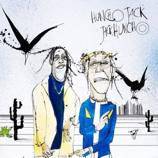

-
Rodeo (2015)

El álbum Rodeo es el segundo álbum de estudio del rapero estadounidense
Travis Scott. Fue lanzado el 4 de septiembre de 2015 por los sellos discográficos Grand Hustle Records
y Epic Records. El álbum cuenta con una variedad de géneros musicales, incluyendo hip hop, trap,
y electrónica, y presenta colaboraciones con varios artistas prominentes como Quavo, Future,
The Weeknd y Kanye West. Rodeo recibió elogios de la crítica por su producción innovadora, letras
y flujo musical, y se considera un punto de inflexión en la carrera de Travis Scott, consolidando
su posición como una de las figuras más influyentes en el panorama del rap contemporáneo.
-
Birds In The Trap (2016)

El álbum Birds in the Trap Sing McKnight es el segundo álbum de estudio del rapero estadounidense
Travis Scott. Fue lanzado el 2 de septiembre de 2016 por Grand Hustle Records e Epic Records.
El proceso de creación del álbum involucró a varios productores y colaboradores, incluidos Nav, Metro Boomin,
Mike Dean y Kanye West, entre otros. Travis Scott trabajó en el álbum durante un período de tiempo, refinando
su estilo musical característico que combina elementos del trap, hip-hop y música electrónica.
El álbum recibió elogios de la crítica por su innovación y producción, y fue un éxito comercial,
alcanzando el número uno en el Billboard 200.
-
Huncho Jack, Jack Huncho (2017)

El álbum Huncho Jack, Jack Huncho fue una colaboración entre los artistas
Quavo y Travis Scott, lanzado en 2017.
La creación del álbum se llevó a cabo en medio de una intensa colaboración creativa entre ambos artistas,
con sesiones de estudio conjuntas y una estrecha colaboración en la producción de las pistas.
La combinación de los estilos distintivos de Quavo y Travis Scott
resultó en un álbum que fusiona elementos del trap y del hip-hop,
con ritmos pegadizos, letras inventivas y una energía contagiosa.
Aunque recibió críticas mixtas, Huncho Jack, Jack Huncho logró un éxito comercial considerable
y consolidó la colaboración creativa entre ambos artistas.
-
AstroWorld (2018)

Astroworld es el tercer álbum de estudio del rapero Travis Scott, lanzado en 2018.
El álbum lleva el nombre de un antiguo parque de atracciones en Houston, Texas, que fue una parte icónica
de la infancia de Travis Scott. La creación de Astroworld fue un proceso intensivo que involucró
a numerosos colaboradores y productores de la industria de la música. Con una mezcla ecléctica de
ritmos de trap, hip-hop y elementos experimentales, el álbum presenta una atmósfera cinematográfica
que transporta a los oyentes a un viaje emocionante y surrealista. Astroworld recibió elogios de
la crítica y fue un gran éxito comercial, encabezando las listas de éxitos en varios países y
consolidando aún más la posición de Travis Scott como uno de los artistas más influyentes de la industria del hip-hop.
-
JackBoys (2019)
JackBoys es un álbum recopilatorio del colectivo homónimo liderado por el rapero Travis Scott.
Fue lanzado en 2019 y sirvió como la primera presentación oficial del sello discográfico
Cactus Jack Records de Travis Scott. El álbum presenta una variedad de artistas asociados con el
colectivo, incluidos Don Toliver, Sheck Wes y otros. Con un estilo distintivo que combina elementos
de trap y hip-hop, JackBoys ofrece una experiencia
auditiva vibrante y enérgica que refleja la
creatividad y la visión artística del colectivo. El álbum fue bien recibido por los fanáticos
y marcó otro éxito para Travis Scott y su equipo.
-
UTOPIA (2023)
UTOPIA es el cuarto álbum de estudio del rapero Travis Scott,
lanzado el 28 de julio de 2023 a través de Cactus Jack Records y Epic Records. El álbum
presenta una amplia gama de colaboraciones, incluidos artistas como
Drake, Playboi Carti, Beyoncé, y más. Con una producción diversa a cargo de varios productores,
el álbum es una continuación de sus trabajos anteriores, ASTROWORLD y JACKBOYS.
Recibió críticas positivas y debutó en el número uno en la lista Billboard 200. Comercialmente,
alcanzó el primer puesto en múltiples países y fue respaldado por tres sencillos y una película conceptual.